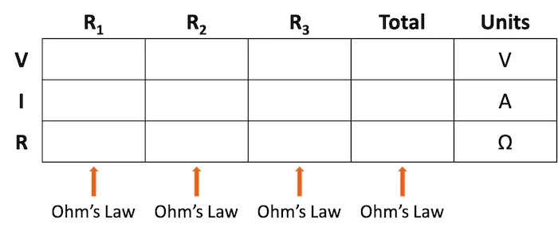
The application of Ohm’s law using the table method is demonstrated for both series and parallel circuits. The table method provides an easy, structured technique for ensuring you arrive at the correct circuit values for current, voltage, and resistance.
The table method provides a structured methodology for ensuring you use the correct context when applying Ohm’s law to a complex circuit configuration. As illustrated in Table 1, you are only allowed to apply Ohm’s law equation for the values of a single vertical column at a time.
Table 1. Format of the table method for Ohm’s law circuit evaluation.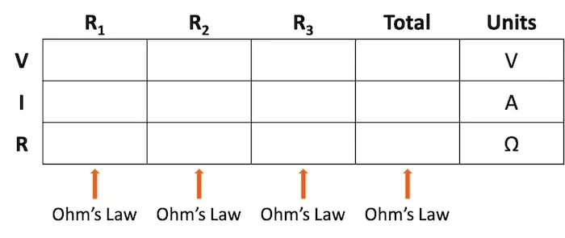
Using a table to list all voltages, currents, and resistance in the circuit makes it easy to see which of those quantities can be properly related in any Ohm’s law equation.
With that in mind, let’s take a look at using this table method for a series circuit.
In this section, we will use the table method to evaluate the series circuit shown in Figure 1. This is the same circuit used to introduce the three-series circuit principles.
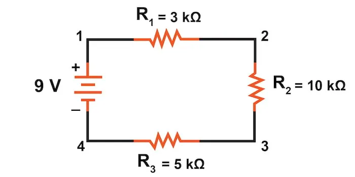
We begin our analysis by filling in those elements of the table that are known directly from the circuit. Example values can be seen in Table 2.
Table 2. Entering values from the series circuit.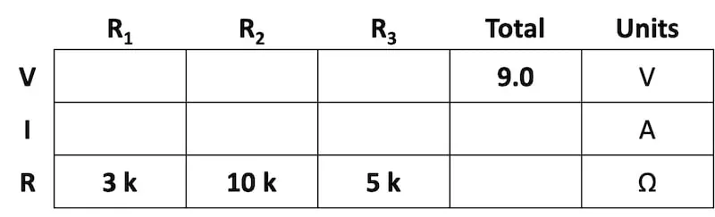
As you can see from the arrangement of the data, we can’t apply the supply voltage (9 V) to any of the resistances (R1, R2, or R3) in any Ohm’s law formula because they are in different columns. The 9 V of the battery is not applied directly across R1, R2, or R3.
Despite that challenge, we can use our rules of series circuits to fill in blank spots on a horizontal row. In this case, we can use the series rule of resistances—the total resistance equals the sum of the individual resistances, as shown in Table 3.
Table 3. Summing the series resistance values.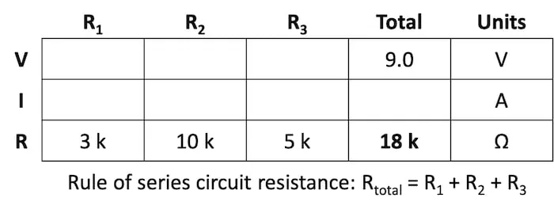
Now, with a value for total resistance in the Total column, we can apply Ohm’s law to calculate the total current:
$$I_{total} = \frac{9 \text{ V}}{18 \text{ k}\Omega} = 500 \space \mu \text{A}$$
From there, we can show the calculation in Table 4.
Table 4. Calculation of the total series circuit current.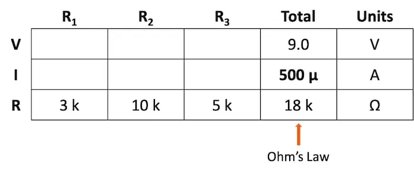
Next, by knowing the series circuit rule where the same amount of current flows through each component, we can fill in the currents for each resistor from the current value calculated in Table 4. This can be seen in Table 5.
Table 5. Copying the series current to all columns.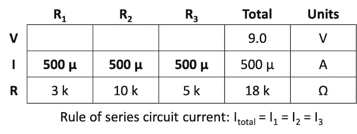
Now that we have found the total resistance and current, we can use Ohm’s law to determine the voltage drop across each resistor, one column at a time, shown in Table 6.
Table 6. Calculating the voltage drop across each series resistor.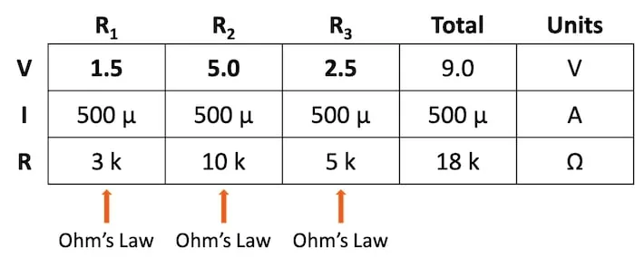
$$V_{R1} = I_{R1} * R_1 = (500 \space \mu \text{A}) \cdot (3 \text{ k}\Omega) = 1.5 \text{ V}$$
$$V_{R2} = I_{R2} * R_2 = (500 \space \mu \text{A}) \cdot (10 \text{ k}\Omega) = 5.0 \text{ V}$$
$$V_{R3} = I_{R3} * R_3 = (500 \space \mu \text{A}) \cdot (5 \text{ k}\Omega) = 2.5 \text{ V}$$
Lastly, we can check our work by summing those individual voltages and verifying that they equal the total of 9 V supplied by the battery:
$$V_{total} = V_{R1} + V_{R2} + V_{R3} = 1.5 + 5.0 + 2.5 = 9.0 \text{ V}$$
In this section, we will apply the table method to the parallel circuit shown in Figure 2. This circuit is employed in our introduction to the three principles of parallel circuits.
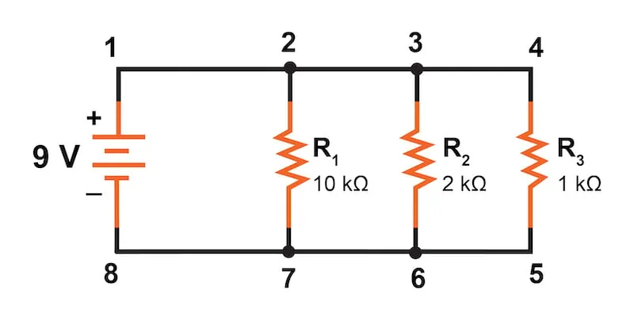
We begin our analysis by filling in those elements of the table that are known directly from the circuit—the voltage and the resistances—as shown in Table 7.
Table 7. Entering values from the parallel circuit.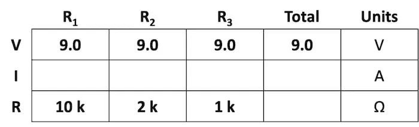
In this parallel circuit, the voltage across R1 is equal to the voltage across R2, which is equal to the voltage across R3, and in turn, is equal to the voltage across the battery (9 V).
From there, we can immediately apply Ohm’s law to each individual resistor to find its current because we know the voltage across each resistor (9 V) and the resistance, as shown in Table 8.
Table 8. Calculating the branch currents in the parallel circuit.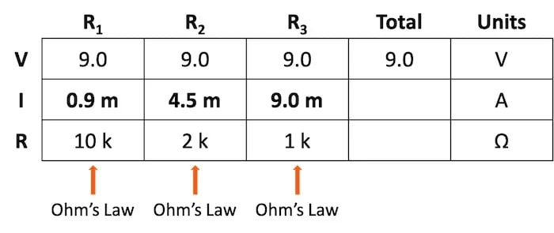
$$I_{R1} = \frac{9 \text{ V}}{10 \text{ k}\Omega} = 0.9 \text{ mA}$$
$$I_{R2} = \frac{9 \text{ V}}{2 \text{ k}\Omega} = 4.5 \text{ mA}$$
$$I_{R3} = \frac{9 \text{ V}}{1 \text{ k}\Omega} = 9.0 \text{ mA}$$
Now, knowing that the total parallel circuit current equals the sum of the individual branch currents, we can fill in the total current in Table 9.
Table 9. Calculating the total parallel circuit current.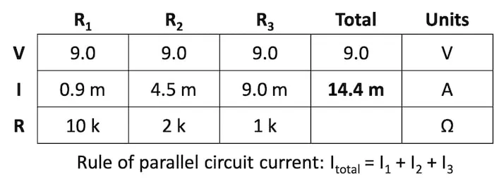
$$I_{total} = I_{R1} + I_{R2} + I_{R3} = 0.9 + 4.5 + 9.0 = 14.4 \text{ mA}$$
Finally, using the table method, we can now easily determine the total effective resistance of our parallel circuit. Applying Ohm’s law to the Total column, we can calculate the total circuit resistance with the result shown in Table 10.
Table 10. Calculating the total effective resistance of the parallel circuit.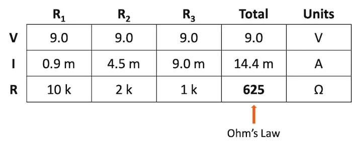
$$R_{total} = \frac{V_{total}}{I_{total}} = \frac{9 \text{ V}}{14.4 \text{ mA}} = 625 \space \Omega$$
As it must be, the resulting total resistance value is less than any of the individual resistance values. This method can help verify that we have not made any mistakes in our analysis.
Using the table method with Ohm’s law is an effective method for evaluating the resistance, current, and voltage for both series and parallel circuits. The table method not only provides an easy, systematic method of solving for these circuit parameters, but it also provides a built-in mechanism for checking your work.
Learn more about the table method, Ohm's law, parallel circuits, and series circuits in the following resources:
Calculators: